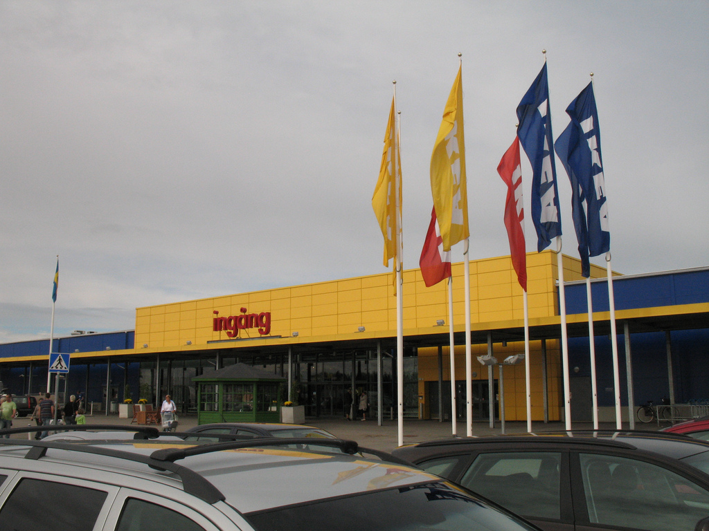

Lär mer om Norrvägsbruket and området i Kalmar
Camping Norrvägsbruket vid Kalmar befinner sig vid sjön och på en distans av 1,2 kilometer från staden.
Om du söker lugn och ro så är du mer än välkommen att komma hit! Det även finns en massa av aktivitet här att göra.
- Det finns en egen butik här, med färskt bröd bakat varje morgon.
- På campingområdet finns en simhall och minigolfbana.
- Besök havet och stranden här i området, där folk kan bada eller att hyr en båt för att fiska.
- Besök Kalmar, där var det mycket finns att göra och se.
- Stadscentrum
- Stadsteater
- Bio
- IKEA området
- Domkyrka
- Hitta mer på stadens hemsida: Kalmar